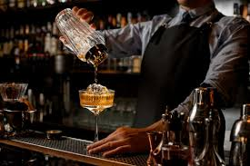
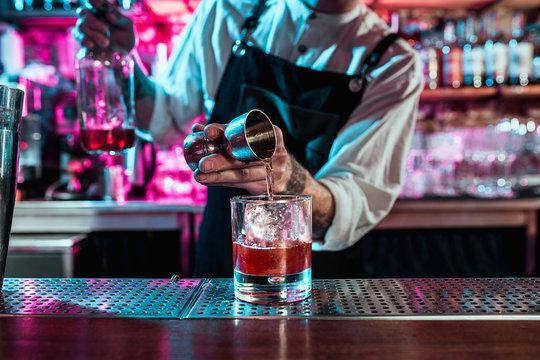
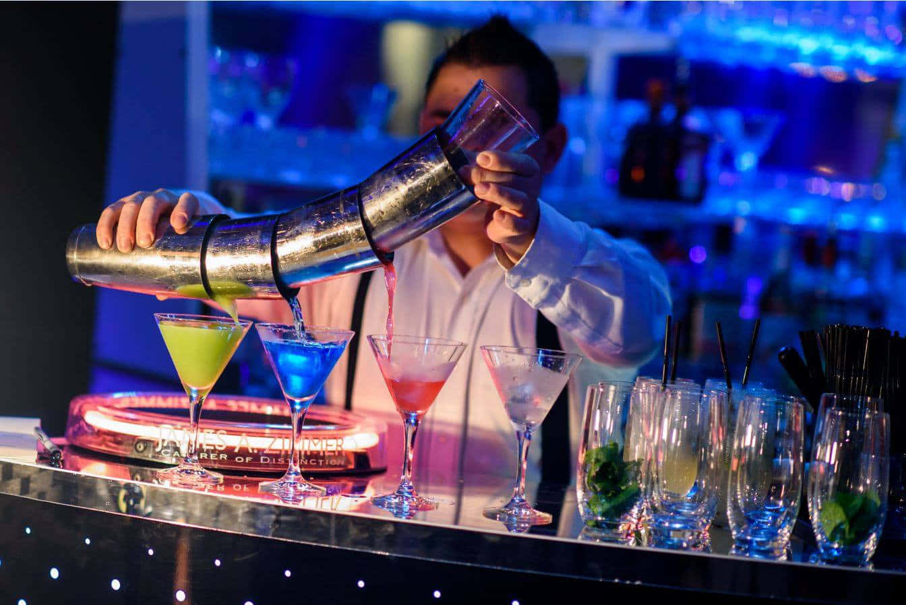

Cursos disponibles:

Curso Básico de Coctelería
- Aprender técnicas fundamentales: agitar, remover, colar y decorar.
- Cocteleria Basica.
- Conocer los utensilios y cristalería básica de un bar.
Aprendizajes:
Descripcion:
Ideal para principiantes y entusiastas que quieren adentrarse en el mundo de la mixología.

Curso Intermedio de Coctelería
- Manejo avanzado de herramientas de coctelería (shaker, muddler, jigger).
- Preparación de cócteles internacionales clásicos (Negroni, Margarita, Manhattan).
- Introducción a la coctelería de autor con variaciones personalizadas.
Aprendizajes:
Descripción: Pensado para quienes ya manejan lo básico y desean perfeccionar técnicas y creatividad.

Curso Avanzado de Bartender Profesional
- Dominio de técnicas de mixología (espumas, esferificaciones, infusiones).
- Creación de cartas de cócteles y Cocteleria de autor.
- Gestión integral de barra: tiempos de servicio, atención al cliente y eficiencia.
Aprendizajes:
Descripción: Dirigido a quienes buscan dedicarse profesionalmente o destacar en la coctelería creativa.